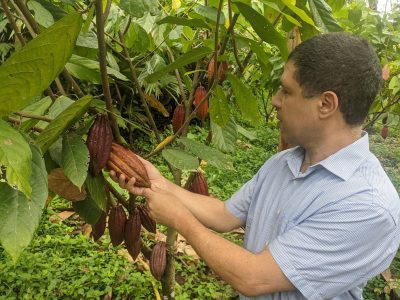

Café

El café es uno de los cultivos más representativos e importantes de Colombia. Se cultiva principalmente en regiones montañosas con clima templado, suelos fértiles y abundantes lluvias, condiciones que permiten obtener granos de alta calidad. El proceso del café incluye varias etapas como la siembra, el cuidado de la planta, la recolección manual de los frutos maduros, el despulpado, el secado y finalmente el tostado del grano. Además de ser un producto muy consumido en todo el mundo, el café es una fuente fundamental de ingresos para muchas familias campesinas y forma parte importante de la cultura y la economía del país.
Plátano

El plátano es uno de los cultivos más importantes en muchas regiones tropicales. Se caracteriza por su rápido crecimiento y por ser una fuente fundamental de alimento y sustento para muchas familias campesinas. Este cultivo requiere climas cálidos, buena humedad y suelos ricos en nutrientes. El plátano puede consumirse de diferentes formas, ya sea cocido, frito o como ingrediente principal en diversos platos tradicionales. Además, su producción contribuye al desarrollo económico de muchas comunidades rurales.
Cacao

El cacao es un cultivo tropical muy valioso y reconocido por ser la materia prima principal para la elaboración del chocolate. Se desarrolla mejor en climas cálidos y húmedos, generalmente bajo la sombra de otros árboles que protegen las plantas jóvenes del sol directo. Los frutos del cacao contienen semillas llamadas granos de cacao, que pasan por procesos de fermentación y secado antes de ser utilizados en la industria alimentaria. Además de su importancia económica, el cultivo de cacao contribuye al desarrollo sostenible de muchas comunidades rurales.